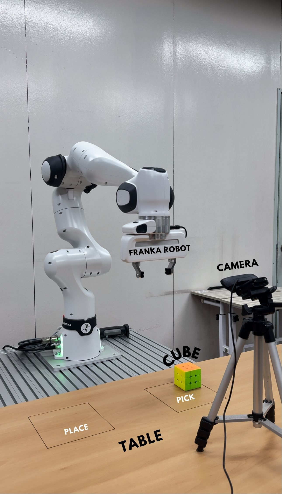

Abstract
This paper introduces the use of the Action Chunking with Transformers (ACT) technique in single-arm robotic manipulation for vision-guided pick-and-place tasks. ACT employs a Conditional Variational Autoencoder (CVAE) to predict sequences of actions, termed "action chunks," which are groups of actions predicted together to achieve more complex tasks efficiently. Unlike traditional methods that rely solely on joint position data and predict individual actions, our approach integrates visual data to enrich the learning context and enhance execution precision. We acquired the expert data by providing manual demonstrations of the task, allowing the model to learn from real-time, complex action sequences. By predicting these action chunks instead of single actions, the ACT model adapts from dual-arm to single-arm configurations, enhancing control strategies and demonstrating significant improvements in the robot's speed, precision, and reliability. This substantiates the paper's title, "Vision-Guided Imitation Learning Using Action Chunk Transformers," highlighting the critical role of vision in advancing robotic control systems.
Architecture

